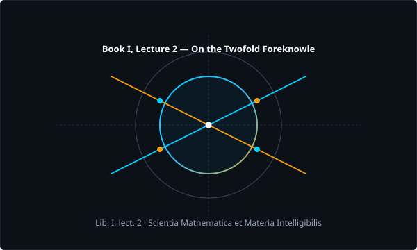

Book I, Lecture 2 — On the Twofold Foreknowledge (That It Is and What It Is) of Subject and Attribute: Unit and Triangle¶
Liber I, Lectio 2 — De duplici praecognitione (quia est et quid est) circa subiectum et passionem: unitas et triangulus

[lib. 1 l. 2 n. 1] After the Philosopher has shown that all learning comes about from pre-existing knowledge, he now shows what the mode of foreknowledge is. And concerning this he does two things: first, he determines the mode of foreknowledge with respect to those things that must be foreknown in order to obtain knowledge of the conclusion whose scientific knowledge is sought; second, he determines the mode of foreknowledge of the conclusion itself whose scientific knowledge is sought through demonstration, at Before one is led by induction, et cetera. Now in foreknowledge two things are included, namely, knowledge and the order of knowledge. First, therefore, he determines the mode of foreknowledge with respect to the knowledge itself; second, with respect to the order of knowledge, at Now it is possible to know, et cetera.
[lib. 1 l. 2 n. 2] Concerning the first, it must be known that that of which scientific knowledge is sought through demonstration is some conclusion in which a proper attribute is predicated of some subject, which conclusion is inferred from certain principles. And because the knowledge of simple things precedes the knowledge of composite things, it is necessary that before knowledge of the conclusion is had, the subject and the proper attribute be known in some manner. And similarly the principle from which the conclusion is inferred must be foreknown, since the conclusion becomes known from the knowledge of the principle.
[lib. 1 l. 2 n. 3] Now of these three—namely, the principle, the subject, and the proper attribute—there is a twofold mode of foreknowledge, namely, that it is (quia est) and what it is (quid est). Now it was shown in Book VII of the Metaphysics that complex expressions are not defined. For there is no definition of white man, and much less of any enunciation. Hence, since a principle is a certain enunciation, one cannot foreknow of it what it is, but only that it is true. Concerning the proper attribute, however, it can indeed be known what it is, because, as is shown in the same book, accidents in a certain manner have a definition. Yet the being (esse) of a proper attribute, as of any accident, is to inhere in a subject—which is precisely what is concluded by demonstration. Therefore one does not foreknow of a proper attribute that it is, but what it is alone. The subject, however, both has a definition and does not depend upon the proper attribute for its being; rather, its own proper being is understood prior to the very being of the proper attribute in it. And therefore concerning the subject it is necessary to foreknow both what it is and that it is, especially since the middle term of a demonstration is taken from the definition of the subject and of the proper attribute.
[lib. 1 l. 2 n. 4] On this account, therefore, the Philosopher says that it is necessary to have foreknowledge in two ways: because there are two things that are foreknown concerning those matters of which we possess foreknowledge, namely, that it is and what it is. And there are some things concerning which it is necessary first to know that they are, such as principles, of which he afterward gives an example by setting down the first of all principles, namely, that of everything either the affirmation or the negation is true.
[lib. 1 l. 2 n. 5] There are other things, however, concerning which it is necessary to understand beforehand what it is that is spoken, that is, what is signified by the name—namely, concerning proper attributes. And he does not say what it is unqualifiedly, but what it is that is spoken, because before it is known of something whether it is, one cannot properly know of it what it is: for of non-beings there are no definitions. Hence the question whether it is precedes the question what it is. Yet it cannot be shown of anything whether it is unless one first understands what is signified by the name. On this account, too, the Philosopher in Book IV of the Metaphysics, in disputing against those who deny the principles, teaches that one should begin from the signification of names. Now he gives the example of the triangle, concerning which one must foreknow that its name signifies this, namely, what is contained in its definition. For since accidents are referred to substance in a certain order, there is nothing unfitting in that which is an accident with respect to one thing being also a subject with respect to another—just as surface is an accident of bodily substance, and yet surface is the primary subject of color. That, however, which is a subject in such a way that it is an accident of nothing is substance. Hence in those sciences whose subject is some substance, that which is the subject can in no way be a proper attribute, as is the case in first philosophy and in natural science, which treats of the mobile subject. In those sciences, however, which treat of certain accidents, nothing prevents that which is taken as a subject with respect to some proper attribute from being taken also as a proper attribute with respect to a prior subject. Yet this does not proceed to infinity. For one must arrive at something primary in that science which is taken as a subject in such a way as in no way to be a proper attribute, as is clear in the mathematical sciences, which treat of continuous or discrete quantity. For in these sciences those things that are primary in the genus of quantity are supposed, such as the unit, the line, the surface, and other such things. Once these have been supposed, certain other things are sought through demonstration, such as the equilateral triangle and the square in geometry, and other such things. Now demonstrations of this sort are called, as it were, operative, such as Upon a given finite straight line to construct an equilateral triangle. Once this has been found, further proper attributes are in turn proved of it, such as that its angles are equal, or something of this sort. It is clear, therefore, that in the first mode of demonstration the triangle stands as a proper attribute, whereas in the second it stands as a subject. Hence the Philosopher here gives the example of the triangle insofar as it is a proper attribute, not insofar as it is a subject, when he says that concerning the triangle it is necessary to foreknow that it signifies this.
[lib. 1 l. 2 n. 6] He also says that there are certain things concerning which one must foreknow both, namely, what it is and that it is. And he gives the example of the unit, which is the principle in every genus of quantity. For although in some manner it is an accident with respect to substance, nevertheless in the mathematical sciences, which treat of quantity, it cannot be taken as a proper attribute, but only as a subject, since in this genus it has nothing prior to it.
[lib. 1 l. 2 n. 7] Now he shows the reason for this diversity, because there is not a like mode of manifestation for the aforesaid three—namely, principle, proper attribute, and subject. For the nature of knowledge is not the same in them: for principles are known through the act of the intellect composing and dividing, whereas the subject and the proper attribute are known through the act of apprehending what a thing is. Yet even this does not belong in the same way to the subject and to the proper attribute: since the subject is defined absolutely, because nothing outside its own essence is placed in its definition, whereas the proper attribute is defined with dependence upon the subject, which is placed in its definition. Hence, since they are not known in the same way, it is no wonder that the foreknowledge of them is diverse.
[lib. 1 l. 2 n. 8] Next, when he says, Now it is possible to know, et cetera, he determines the mode of foreknowledge on the part of the very order that foreknowledge implies. For one thing is prior to another both according to time and according to nature. And this twofold order must be considered in foreknowledge. For something is foreknown as being known prior in time; and of such things he says that some things it happens that one knows by knowing them prior in time to those things with respect to which they are said to be foreknown. Certain other things, however, are known simultaneously in time, though prior in nature; and of these he says that of certain foreknown things one receives knowledge simultaneously in time with those things with respect to which they are foreknown.
[lib. 1 l. 2 n. 9] What these latter things are he manifests by adding that of this sort are whatever things are contained under certain universals of which one possesses knowledge, that is, things clearly known to be contained under such universals. And he manifests this further by an example. For since two propositions are required in order to infer a conclusion, namely, a major and a minor, once the major proposition is known, knowledge of the conclusion is not yet had. The major proposition is therefore foreknown prior to the conclusion not only in nature, but also in time. Again, if in the minor proposition something contained under the universal proposition that is the major is introduced or assumed, concerning which it is not manifest that it is contained under this universal, knowledge of the conclusion is not yet had, because the truth of the minor proposition will not yet be certain. If, however, a term is assumed in the minor proposition concerning which it is manifest that it is contained under the universal in the major proposition, the truth of the minor proposition is evident, because what is taken under the universal carries with it the recognition of that universal, and thus knowledge of the conclusion is had immediately. As if someone were to demonstrate thus: Every triangle has three angles equal to two right angles—once this is known, knowledge of the conclusion is not yet had; but when afterward it is assumed, This figure inscribed in a semicircle is a triangle, immediately it is known that it has three angles equal to two right angles. If, however, it were not manifest that this figure inscribed in a semicircle is a triangle, the conclusion would not immediately be known once the assumption was introduced; rather, it would be necessary to seek a further middle term through which this figure would be demonstrated to be a triangle. Giving an example, therefore, of those things that are known before the conclusion prior in time, the Philosopher says that someone receiving knowledge of a conclusion through demonstration foreknew this proposition even according to time, namely, that every triangle has three angles equal to two right angles; yet in introducing this assumption, namely, that what is in the semicircle is a triangle, he knew the conclusion simultaneously—namely, in time—because what was introduced carries with it the recognition of the universal under which it is contained, so that there is no need to seek a further middle term. And therefore he adds that of certain things learning takes place in this manner, that is, knowledge of them is received per se, and there is no need to know them through some other middle term that would be ultimate in the resolution whereby mediated truths are reduced to immediate ones. Or it may be read thus: that the ultimate, that is, the extreme term that is taken under the universal middle, need not be known to fall under that universal through some other middle term. And what those things are that always carry with them the recognition of their universal he manifests by adding that of this sort are singulars, which are not predicated of any subject, since no middle term can be found between singulars and their species.